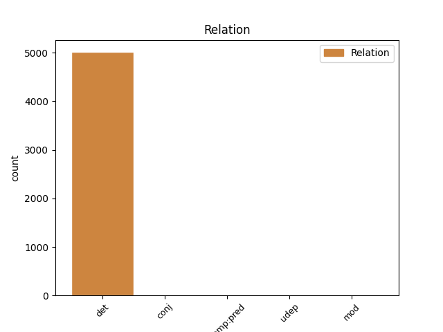
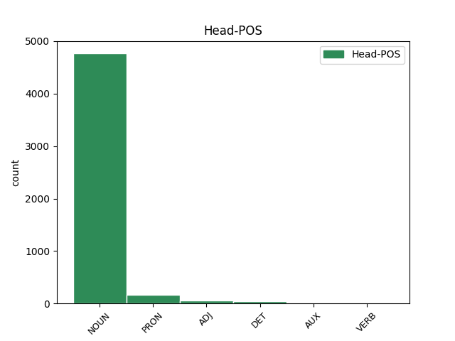
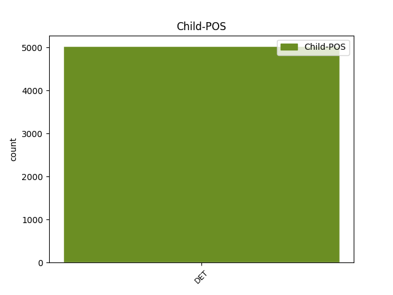

Distribution of features within this leaf



Agreement Rules sorted by frequency.
- When the dependent token is the determiner(det) of the head token, and the head token is NOUN and the dependent token is DET.
1 2000. _ _ _ _ 0 _ _ _
2 a. _ _ _ _ 0 _ _ _
3 alguses _ _ _ _ 0 _ _ _
4 hakkas _ _ _ _ 0 _ _ _
5 väliskonjuktuur _ _ _ _ 0 _ _ _
6 ebasoodsamaks _ _ _ _ 0 _ _ _
7 muutuma _ _ _ _ 0 _ _ _
8 , _ _ _ _ 0 _ _ _
9 see see DET P Case=Nom|Number=Sing|PronType=Dem 10 det _ _
10 mõju mõju NOUN S Case=Nom|Number=Sing 0 _ _ _
11 ei _ _ _ _ 0 _ _ _
12 avaldunud _ _ _ _ 0 _ _ _
13 veel _ _ _ _ 0 _ _ _
14 ekspordimahus _ _ _ _ 0 _ _ _
15 ja _ _ _ _ 0 _ _ _
16 2000. _ _ _ _ 0 _ _ _
17 a. _ _ _ _ 0 _ _ _
18 oli _ _ _ _ 0 _ _ _
19 allhanke _ _ _ _ 0 _ _ _
20 ekspordi _ _ _ _ 0 _ _ _
21 osatähtsus _ _ _ _ 0 _ _ _
22 SKP-s _ _ _ _ 0 _ _ _
23 suur _ _ _ _ 0 _ _ _
24 . _ _ _ _ 0 _ _ _
1 Kõik kõik DET P Case=Nom|Number=Sing|PronType=Tot 2 det _ _
2 see see PRON P Case=Nom|Number=Sing|PronType=Dem 0 _ _ _
3 avaldas _ _ _ _ 0 _ _ _
4 tugevat _ _ _ _ 0 _ _ _
5 toimet _ _ _ _ 0 _ _ _
6 ka _ _ _ _ 0 _ _ _
7 sektorite _ _ _ _ 0 _ _ _
8 tasandi _ _ _ _ 0 _ _ _
9 tööhõive _ _ _ _ 0 _ _ _
10 olukorrale _ _ _ _ 0 _ _ _
11 . _ _ _ _ 0 _ _ _
1 Ka _ _ _ _ 0 _ _ _
2 empiiriliselt _ _ _ _ 0 _ _ _
3 on _ _ _ _ 0 _ _ _
4 see _ _ _ _ 0 _ _ _
5 hüpotees _ _ _ _ 0 _ _ _
6 üks üks DET P Case=Nom|Number=Sing|PronType=Ind 8 det _ _
7 lihtsamini _ _ _ _ 0 _ _ _
8 kontrollitavaid kontrolli=tav ADJ A Case=Nom|Degree=Pos|Number=Sing|Tense=Pres|VerbForm=Part|Voice=Act 0 _ _ _
9 - _ _ _ _ 0 _ _ _
10 Eesti _ _ _ _ 0 _ _ _
11 viimase _ _ _ _ 0 _ _ _
12 10 _ _ _ _ 0 _ _ _
13 aasta _ _ _ _ 0 _ _ _
14 inflatsiooni _ _ _ _ 0 _ _ _
15 ja _ _ _ _ 0 _ _ _
16 töötuse _ _ _ _ 0 _ _ _
17 aegridade _ _ _ _ 0 _ _ _
18 regressioonanalüüs _ _ _ _ 0 _ _ _
19 võimaliku _ _ _ _ 0 _ _ _
20 seose _ _ _ _ 0 _ _ _
21 kindlakstegemiseks _ _ _ _ 0 _ _ _
22 . _ _ _ _ 0 _ _ _
1 Geofüüsikaliste _ _ _ _ 0 _ _ _
2 uuringute _ _ _ _ 0 _ _ _
3 nagu _ _ _ _ 0 _ _ _
4 kõigi kõik DET P Case=Gen|Number=Plur|PronType=Tot 5 det _ _
5 teistegi teine DET P Case=Gen|Number=Plur|PronType=Dem 0 _ _ _
6 praktilist _ _ _ _ 0 _ _ _
7 tähtsust _ _ _ _ 0 _ _ _
8 omavate _ _ _ _ 0 _ _ _
9 uuringute _ _ _ _ 0 _ _ _
10 puhul _ _ _ _ 0 _ _ _
11 nõutakse _ _ _ _ 0 _ _ _
12 järjest _ _ _ _ 0 _ _ _
13 kõrgemat _ _ _ _ 0 _ _ _
14 täpsust _ _ _ _ 0 _ _ _
15 ja _ _ _ _ 0 _ _ _
16 detailsust _ _ _ _ 0 _ _ _
17 . _ _ _ _ 0 _ _ _
1 Ühe üks DET P Case=Gen|Number=Sing|PronType=Ind 0 _ _ _
2 või _ _ _ _ 0 _ _ _
3 teise teine DET P Case=Gen|Number=Sing|PronType=Dem 1 conj _ _
4 suure _ _ _ _ 0 _ _ _
5 programmi _ _ _ _ 0 _ _ _
6 väljakuulutamine _ _ _ _ 0 _ _ _
7 pole _ _ _ _ 0 _ _ _
8 seejuures _ _ _ _ 0 _ _ _
9 tähendanud _ _ _ _ 0 _ _ _
10 muude _ _ _ _ 0 _ _ _
11 uuringute _ _ _ _ 0 _ _ _
12 piiramist _ _ _ _ 0 _ _ _
13 või _ _ _ _ 0 _ _ _
14 nende _ _ _ _ 0 _ _ _
15 vähem _ _ _ _ 0 _ _ _
16 tähtsaks _ _ _ _ 0 _ _ _
17 pidamist _ _ _ _ 0 _ _ _
18 . _ _ _ _ 0 _ _ _
1 Häbelikult _ _ _ _ 0 _ _ _
2 poetab _ _ _ _ 0 _ _ _
3 produtsent _ _ _ _ 0 _ _ _
4 Artur _ _ _ _ 0 _ _ _
5 Veber _ _ _ _ 0 _ _ _
6 stendile _ _ _ _ 0 _ _ _
7 aprillis _ _ _ _ 0 _ _ _
8 alustatava _ _ _ _ 0 _ _ _
9 vene _ _ _ _ 0 _ _ _
10 kriminaalfilmi _ _ _ _ 0 _ _ _
11 " _ _ _ _ 0 _ _ _
12 Dirty _ _ _ _ 0 _ _ _
13 Blood _ _ _ _ 0 _ _ _
14 " _ _ _ _ 0 _ _ _
15 reklaami _ _ _ _ 0 _ _ _
16 , _ _ _ _ 0 _ _ _
17 mille _ _ _ _ 0 _ _ _
18 üks üks DET P Case=Nom|Number=Sing|PronType=Ind 21 comp:pred _ _
19 produtsente _ _ _ _ 0 _ _ _
20 ta _ _ _ _ 0 _ _ _
21 on olema AUX V Mood=Ind|Number=Sing|Person=3|Tense=Pres|VerbForm=Fin|Voice=Act 0 _ _ _
22 . _ _ _ _ 0 _ _ _
1 Tänu _ _ _ _ 0 _ _ _
2 Niemeyeri _ _ _ _ 0 _ _ _
3 kommunistlikele _ _ _ _ 0 _ _ _
4 vaadetele _ _ _ _ 0 _ _ _
5 oli _ _ _ _ 0 _ _ _
6 ta _ _ _ _ 0 _ _ _
7 ühena üks DET P Case=Ess|Number=Sing|PronType=Ind 10 udep _ _
8 vähestest _ _ _ _ 0 _ _ _
9 hinnatud _ _ _ _ 0 _ _ _
10 eeskuju ees_kuju NOUN S Case=Nom|Number=Sing 0 _ _ _
11 ka _ _ _ _ 0 _ _ _
12 Nõukogude _ _ _ _ 0 _ _ _
13 Liidus _ _ _ _ 0 _ _ _
14 . _ _ _ _ 0 _ _ _
Disagree Examples:
1 Kui _ _ _ _ 0 _ _ _
2 meenutada _ _ _ _ 0 _ _ _
3 mitmeid mitu DET P Case=Par|Number=Plur|PronType=Ind 6 det _ _
4 ajakirjandusse _ _ _ _ 0 _ _ _
5 jõudnud _ _ _ _ 0 _ _ _
6 politsei- politsei NOUN S Case=Gen|Hyph=Yes|Number=Sing 0 _ _ _
7 ja _ _ _ _ 0 _ _ _
8 kohtulugusid _ _ _ _ 0 _ _ _
9 , _ _ _ _ 0 _ _ _
10 siis _ _ _ _ 0 _ _ _
11 näib _ _ _ _ 0 _ _ _
12 pilt _ _ _ _ 0 _ _ _
13 olevat _ _ _ _ 0 _ _ _
14 paljuski _ _ _ _ 0 _ _ _
15 samasugune _ _ _ _ 0 _ _ _
16 -- _ _ _ _ 0 _ _ _
17 pätid _ _ _ _ 0 _ _ _
18 lastakse _ _ _ _ 0 _ _ _
19 vabadusse _ _ _ _ 0 _ _ _
20 ja _ _ _ _ 0 _ _ _
21 veel _ _ _ _ 0 _ _ _
22 vabandatakse _ _ _ _ 0 _ _ _
23 nende _ _ _ _ 0 _ _ _
24 ees _ _ _ _ 0 _ _ _
25 . _ _ _ _ 0 _ _ _
1 Igal _ _ _ _ 0 _ _ _
2 hommikul _ _ _ _ 0 _ _ _
3 kella _ _ _ _ 0 _ _ _
4 poole _ _ _ _ 0 _ _ _
5 üheksaks _ _ _ _ 0 _ _ _
6 sõitsid sõitma VERB V Mood=Ind|Number=Plur|Person=3|Tense=Past|VerbForm=Fin|Voice=Act 0 _ _ _
7 poisid _ _ _ _ 0 _ _ _
8 oma _ _ _ _ 0 _ _ _
9 autodega _ _ _ _ 0 _ _ _
10 mõnda mõni DET P Case=Add|Number=Sing|PronType=Ind 6 det _ _
11 Tallinna _ _ _ _ 0 _ _ _
12 lähedasse _ _ _ _ 0 _ _ _
13 parki _ _ _ _ 0 _ _ _
14 või _ _ _ _ 0 _ _ _
15 metsa _ _ _ _ 0 _ _ _
16 ja _ _ _ _ 0 _ _ _
17 alustasid _ _ _ _ 0 _ _ _
18 päeva _ _ _ _ 0 _ _ _
19 viiekilomeetrise _ _ _ _ 0 _ _ _
20 jooksutrenniga _ _ _ _ 0 _ _ _
21 . _ _ _ _ 0 _ _ _
1 Tähtvere _ _ _ _ 0 _ _ _
2 on _ _ _ _ 0 _ _ _
3 Tartu _ _ _ _ 0 _ _ _
4 linna _ _ _ _ 0 _ _ _
5 üks üks DET P Case=Nom|Number=Sing|PronType=Ind 7 det _ _
6 hinnatumaid _ _ _ _ 0 _ _ _
7 elurajoone elu_rajoon NOUN S Case=Par|Number=Plur 0 _ _ _
8 . _ _ _ _ 0 _ _ _
1 Kalju _ _ _ _ 0 _ _ _
2 Suur _ _ _ _ 0 _ _ _
3 on _ _ _ _ 0 _ _ _
4 üks üks DET P Case=Nom|Number=Sing|PronType=Ind 7 det _ _
5 tähtsamaid _ _ _ _ 0 _ _ _
6 eesti _ _ _ _ 0 _ _ _
7 fotograafe foto_graaf NOUN S Case=Par|Number=Plur 0 _ _ _
8 eelmise _ _ _ _ 0 _ _ _
9 sajandi _ _ _ _ 0 _ _ _
10 neljal _ _ _ _ 0 _ _ _
11 viimasel _ _ _ _ 0 _ _ _
12 kümnendil _ _ _ _ 0 _ _ _
13 ; _ _ _ _ 0 _ _ _
14 ja _ _ _ _ 0 _ _ _
15 ta _ _ _ _ 0 _ _ _
16 pildistab _ _ _ _ 0 _ _ _
17 ka _ _ _ _ 0 _ _ _
18 uuel _ _ _ _ 0 _ _ _
19 sajandil _ _ _ _ 0 _ _ _
20 . _ _ _ _ 0 _ _ _
1 Lihtsamad _ _ _ _ 0 _ _ _
2 asjad asi NOUN S Case=Nom|Number=Plur 0 _ _ _
3 teen _ _ _ _ 0 _ _ _
4 kõik kõik DET P Case=Nom|Number=Sing|PronType=Tot 2 det _ _
5 ise _ _ _ _ 0 _ _ _
6 ära _ _ _ _ 0 _ _ _
7 . _ _ _ _ 0 _ _ _